Loqui · Plan · Series overview · Draft 1 · November 10, 2026
Loqui for Windows
Loqui comes to Windows 11: press a shortcut, speak, and clean text lands wherever you're typing, turned into text on the PC itself, exactly as on the Mac.
What approving this does. One yes builds the whole series: six steps, one after another, each about a day for one builder. It accepts every recommendation below unless you change one, including two costs: a Microsoft signing account at $9.99 a month in your name (step 5) and Parallels on your MacBook at about $100 a year (step 2), so you can try it with your own voice. You set up both accounts yourself when their step starts. Nobody outside gets a download link until you approve the first Windows version at Ready to ship, at the end of step 6.
Your words
November 10, to Aiva"I need you to have it spin up a plan to create a Windows version of this product."
November 10, on the six step plans"How can I review it and refine it if it doesn't show up as a proper plan under my needs you section. The steps and the series don't give me anything to review or comment on."
What changes
This page is the whole series in one place, so you can read it, comment on it and approve it once. Each step also has its own detailed plan, kept as written.
What people on Windows get
- Loqui on Windows 11, on ordinary Intel and AMD PCs and on the newer Arm laptops.
- The same gesture. Tap Ctrl+Shift+Space to start and again to stop, or hold it while you talk. The Mac's dark bubble with the magenta quote marks shows while it listens, and never takes the cursor away.
- Speech turned into text on the PC. English and 24 other European languages, with punctuation and capitals. Audio never leaves the PC.
- The same cleanup. Filler words removed, your dictionary applied, sentences split by a pause healed.
- Everything the Mac has on screen: a welcome window that helps with the microphone, settings with the shortcut recorder and dictionary, history, the Recent menu, and the stats window with the shaded calendar.
- A signed installer with your name as publisher, no administrator needed, and automatic updates.
- The same privacy promise. The only thing loqui sends over the internet is the update check.
What you get
- One product. One project, one issue list, one README, one download page that offers each visitor the right button.
- Two apps that can't drift apart. About 60 cleanup examples and one set of worked stats figures, which the Mac app and the Windows app must both pass on every change.
- Something to look at after every step, and from step 2, Windows on your MacBook to try it with your own voice.
- A safe way out. Every change goes to your test PC first; only versions you approve reach everyone, and Roll back sends every PC to the last good version.
- The Mac app behaves exactly as today. It only gains tests.
Who it's for: public. Anyone can download Loqui for Windows, with no account.
The six steps, and what you see after each
A builder takes each step in turn, starting when the one before is merged. Sizes are one builder's working hours, about 42 in all.
- Groundwork (about 7 hours). The shared cleanup rules, a Windows app that starts and sits by the clock, the Windows look, and where Loqui runs written down. You see: green Windows checks on GitHub, each with a picture taken on a real Windows machine of loqui's icon by the clock and its About window.
- Dictation (about 8 hours). Press the shortcut, speak, and clean text lands at the cursor in any Windows app. You see: pictures from GitHub's Windows machine of Notepad holding a spoken sentence, with a line saying loqui opened no network connections. Then on your MacBook: install the test build in Windows, dictate with your own voice, and turn the microphone off to see the message.
- Settings, history and welcome (about 7 hours). Nothing needs a settings file edited by hand any more. You see: the welcome window ticking off the microphone; change the shortcut, add a dictionary word, search history, copy from Recent; restart Windows and loqui is back by the clock.
- Stats (about 7 hours). The Mac's stats window with the calendar picker. You see: today's words match what you said; the shaded calendar jumps to a busy day; GitHub shows the Mac and Windows giving the same figures.
- Signed installer, updates and a test channel (about 8 hours, plus about 20 minutes of your time). You see: the test version installs with no "unknown publisher" warning and shows James Laws as publisher; after the next change, an update appears by itself within the hour; Approve and Roll back both work.
- Launch (about 5 hours). You see: a private preview of the download page offering Windows to Windows visitors, the README covering Windows, and, once you approve, the first public Windows version.
How it's tested without a Windows PC
- GitHub's Windows computers, for free. Every change is built and started on both kinds of Windows PC GitHub offers, Intel/AMD and Arm. GitHub doesn't charge for this on public projects.
- A real dictation on every change, with no person involved. A virtual sound cable gives the machine a microphone. Notepad opens, a script presses the shortcut, Windows' own voice speaks a sentence into the cable, and loqui types it. The check compares Notepad's text word for word, saves a picture of the screen, and fails if loqui opened any network connection.
- Screens checked here on the Mini. Every window also runs in a browser, so keyboard use and an accessibility scan are checked without Windows. The Windows check then photographs each real window, light and dark.
- Shared examples keep the two apps the same. The cleanup rules and the stats figures are written down once; both apps must pass every example, and a rule that drifts on one side fails its check.
- Proved before planning. Three runs on GitHub's Windows computers on November 10: a 44-second recording became text in 5.2 seconds on an ordinary Intel/AMD machine and 2.8 seconds on an Arm one, word for word, with nothing online; German, Spanish and French came out right; a pressed shortcut, the microphone and pasting into Notepad all worked end to end; and the window technology opened no internet connections of its own.
- You, with your own voice. From step 2, Windows 11 runs in Parallels on your MacBook using its microphone and keyboard. Once you've bought Parallels, an agent sets it up over the MacBook connection.
How it's signed, shipped and updated
- Signed in your name. Through Microsoft's Artifact Signing service, $9.99 a month. You create the account and verify your identity with photo ID (about 20 minutes, then Microsoft checks it); an agent connects GitHub to it. Windows shows "James Laws" as the publisher. For the first few weeks Windows may still show a "Windows protected your PC" notice while it learns the app is trusted.
- Built and signed by GitHub. Releases are made on GitHub's Windows computers through a short-lived login with no stored password. No signing key sits on the Mini or your MacBook.
- The installer. For the person's own account, so no administrator is needed. It includes the speech model, so it's about 500 MB to download once. Loqui appears in Start and in Installed apps. Uninstalling asks whether to also delete history and settings, as the Mac's uninstall does.
- Updates. loqui checks once a day and when you click Check for updates. A new version shows what's new and installs in one click. Updates are about 12 MB because the speech model stays. Every update is signed with a Windows update key, and loqui refuses any update that isn't.
- The test channel is staging. Every merged change becomes a signed test version within about half an hour. A PC with "Get test versions" switched on in Settings gets it; everyone else only gets versions you approve. Test versions sit on GitHub's releases page marked as pre-releases, linked from nowhere.
- Approve and go back. Your Ready to ship approval publishes the exact test version you tried, unchanged. If a version turns out bad, Roll back sends every PC to the last good one automatically.
- The Mac is untouched. Windows versions are numbered and listed separately, and GitHub's "latest release" stays the Mac's, so today's Mac links keep working.
Where Loqui runs
- On people's own computers. There is no Loqui server and no account.
- Downloads and update lists on GitHub, free. Installers on GitHub's releases page; the download page and both update lists on GitHub's free web hosting, as the Mac's are today; builds and checks on GitHub's Windows computers. Nothing new runs on the Mini or on the jl-platform server.
- On the PC. Settings, history and stats stay in the person's own Windows profile on that PC, as plain text, with the Mac's choices for how long history is kept. Each computer keeps its own stats.
- Written down in Loqui's project file and the platform registry in step 1.
Screens, before and after
These pictures come from the six step plans. "Before" is the real Mac app or the live download page. "After" is the Windows look drawn in a separate page and photographed, except one real screen from GitHub's Windows machine. Loqui for Windows is a desktop app, so it has no phone size; only the download page has one. Click any picture to see it big.
Step 1: the Windows look, and loqui by the clock

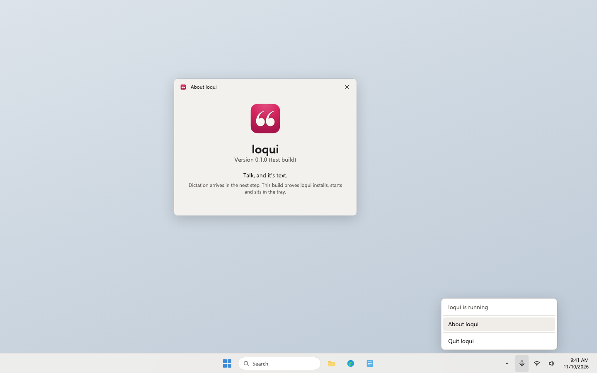
Step 2: dictation
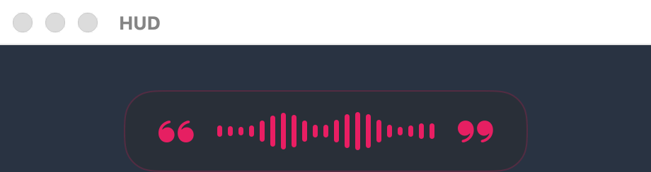


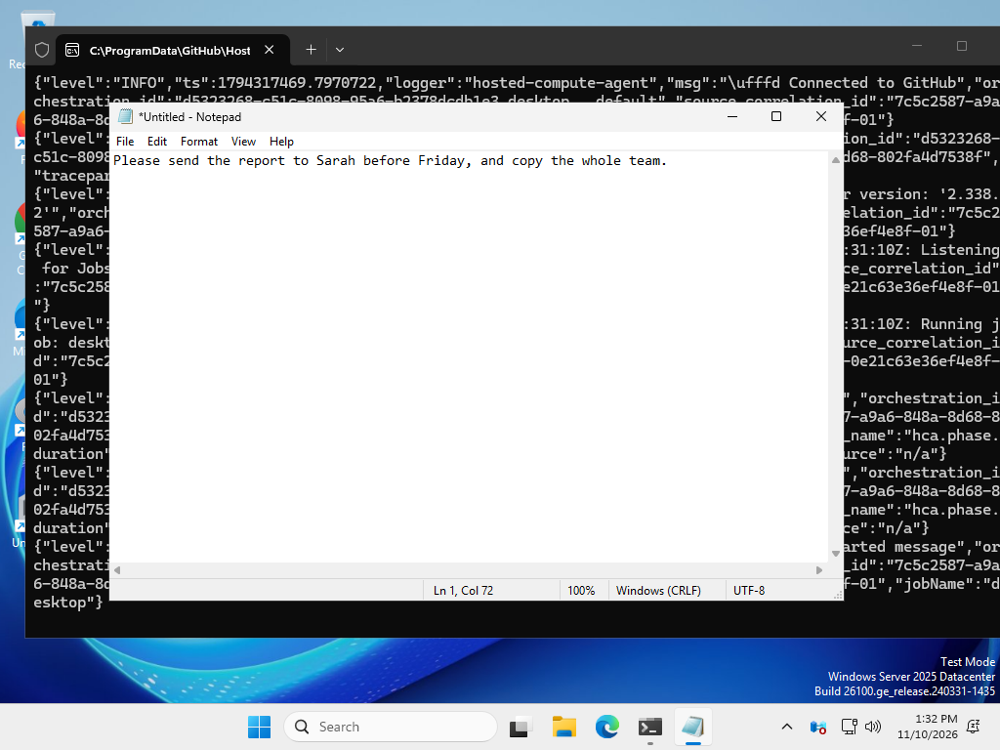
Step 3: welcome, settings, history and the tray menu
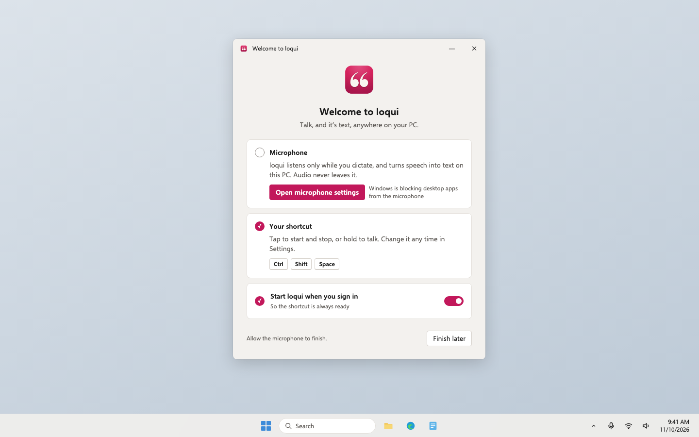
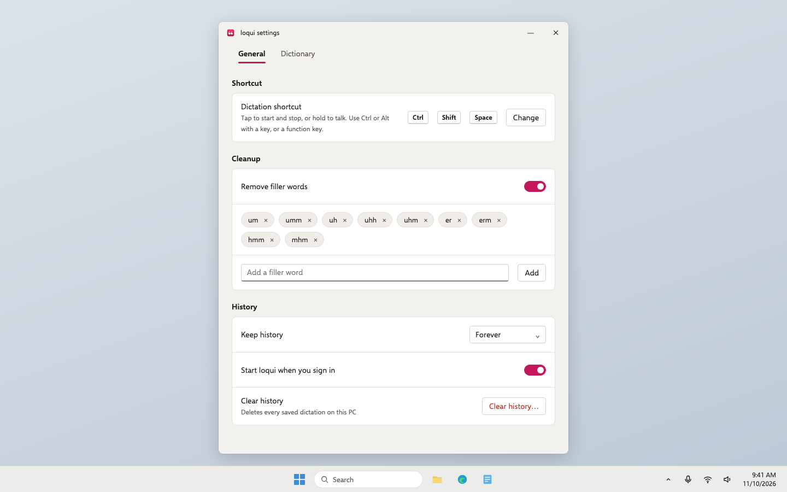
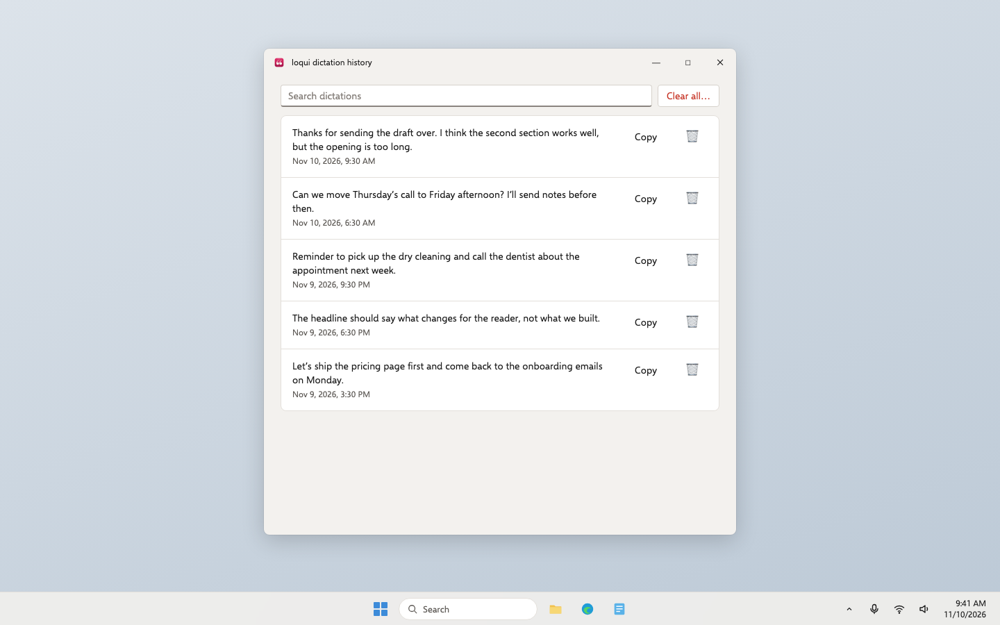
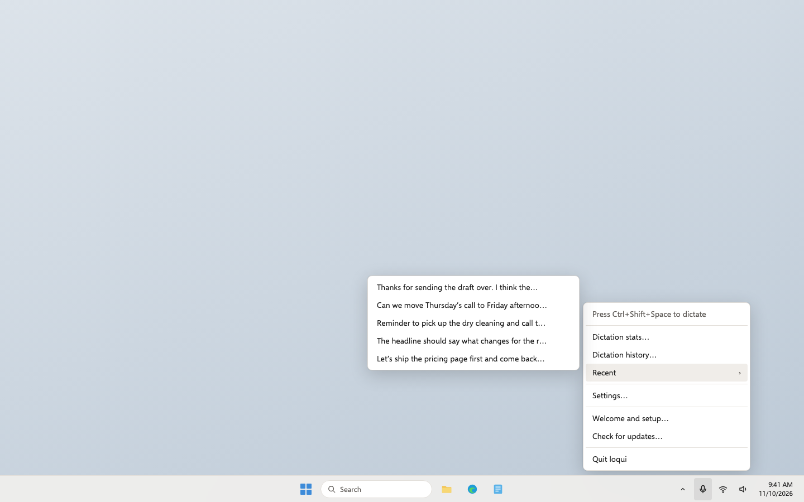
Step 4: stats
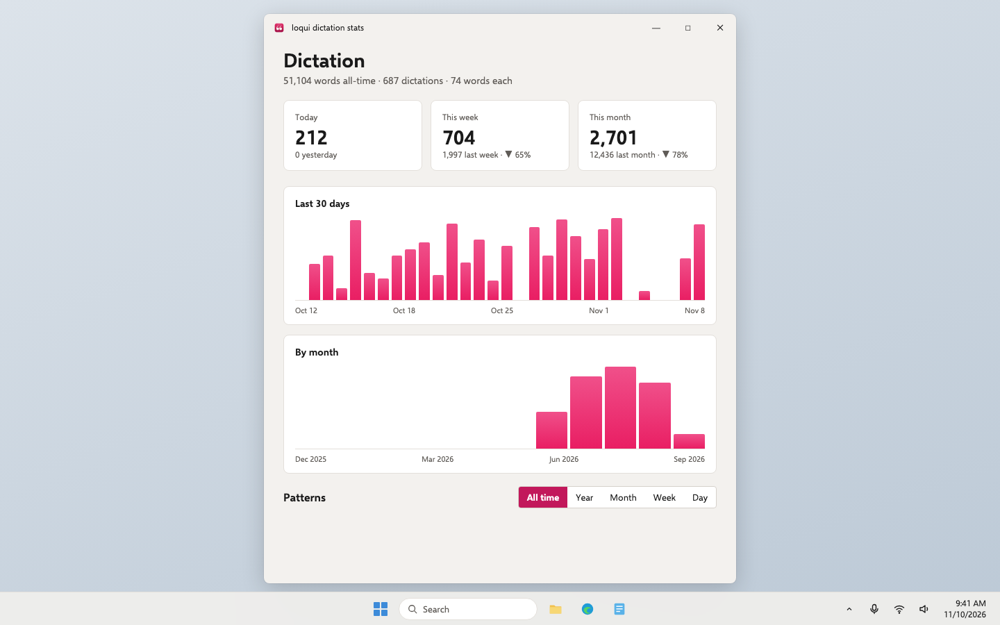

Step 5: install and update
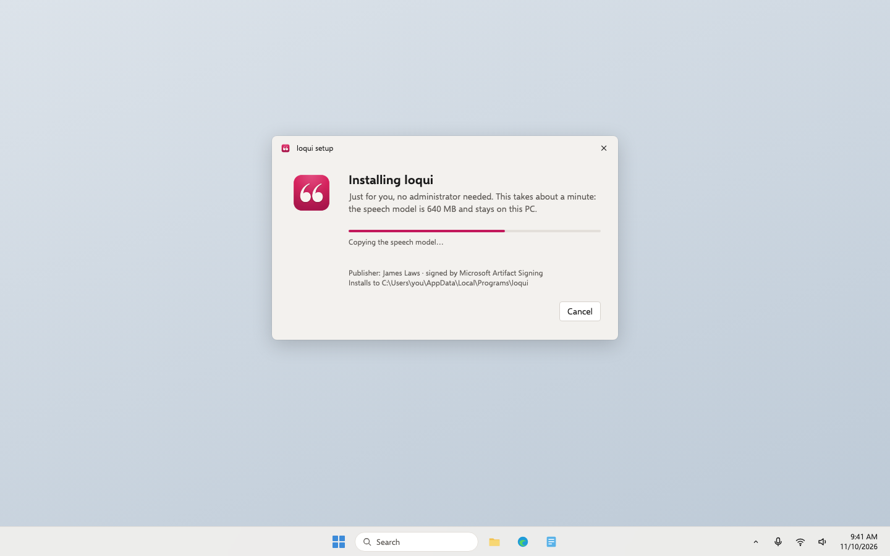
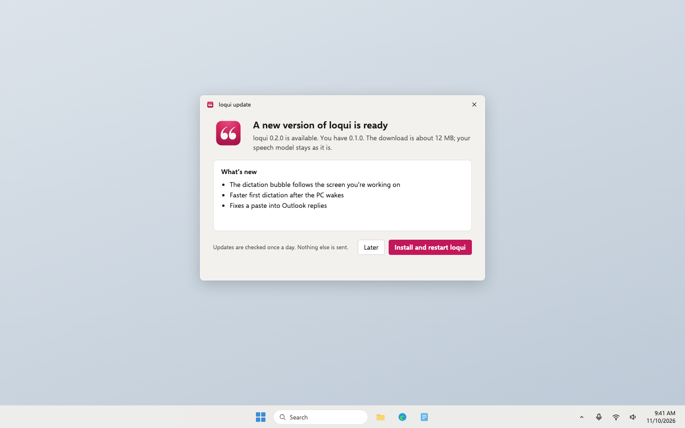
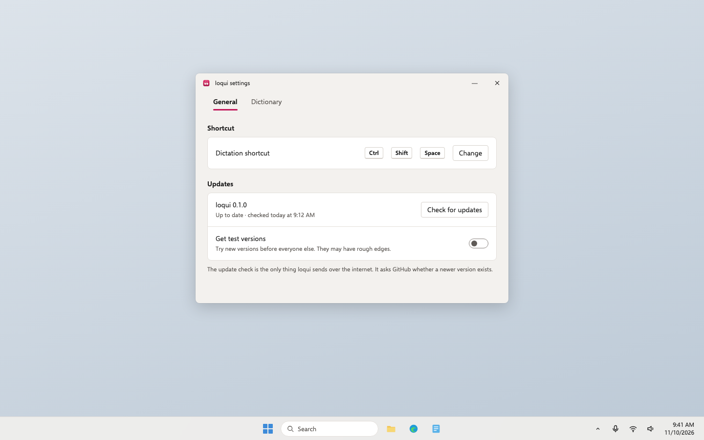
Step 6: the download page


Empty, loading, error and no permission

- Empty: history and stats each say "No dictations yet" with the shortcut to press; a period with no dictations says so instead of showing zeros; nothing heard means nothing is pasted.
- Loading: the speech model loads in about 2.5 seconds after loqui starts; a press before then still records and the text arrives once it's ready. Updates show download progress.
- Error: no microphone, a window that refuses pasted text (the text is on the clipboard, press Ctrl+V), an unreadable settings file (defaults are used and the file is left alone), no internet for the update check (fails quietly, dictation unaffected), and an update that isn't signed (refused). Each gets one plain message.
- No permission: Windows' microphone switch for desktop apps, above; the welcome window leads you to it. Installing and updating need no administrator.
Risk
Risky: money, secrets. Money: a Microsoft signing account at $9.99 a month (about $120 a year) and Parallels at about $100 a year. Secrets: a signing identity in your name and a new Windows update key; whoever held that key could push an update every copy would accept. What keeps it safe: GitHub signs through a short-lived login with no stored password, the update key lives only as a locked GitHub secret with your backup in 1Password, publishing to everyone needs your approval, and step 5 gets one Codex safety review before it ships. loqui watches the keyboard as the Mac app does, acting only on the shortcut, and a check proves typed keys never reach any loqui file. The first public release in step 6 can't be taken back, so it waits for your approval, and Roll back is tested before it.
Decisions, with my recommendation
Every decision from the six step plans, in one place. Approving this draft says yes to each recommendation unless you change one. The ones that cost money or need you come first.
1. How Windows releases are signed (step 5)
- Recommended: Microsoft's Artifact Signing service, $9.99 a month. You create an Azure account and verify your identity with photo ID; an agent connects GitHub to it.
- A yearly certificate from a company like DigiCert or Sectigo, $150 to $300 a year, which now has to live on a hardware key and is hard to use from GitHub.
- Don't sign. Every download shows "unknown publisher", and Smart App Control blocks it outright on new PCs.
- Only the Microsoft Store, which signs for free but handles updates its own way.
Why: the cheapest way to get your name on the app that works from GitHub with no hardware key. If Microsoft's sign-up for individuals is closed when you apply, the yearly certificate is the fallback.
2. How you try it yourself (step 2)
- Recommended: Parallels Desktop on your MacBook, about $100 a year, running Windows 11 for Arm, which is free to install for testing.
- A second-hand Windows laptop, about $300 once.
- Only the pictures from the checks, until launch.
Why: you try it with your own voice from step 2 on, with no second machine on the desk, and an agent can set it up over the MacBook connection.
3. The Windows update key (step 5)
- Recommended: a new key just for Windows updates, kept only as a locked GitHub secret, with a backup you save in 1Password.
- No separate key; trust the download and the Windows signature alone.
Why: it matches the Mac's double check (Apple's signature plus the update key) and is what the security notes promise users.
4. Which speech engine (step 2)
- Recommended: NVIDIA's open Parakeet model (version 3), run on the PC's own processor.
- OpenAI's open Whisper model.
- Windows' own speech recognition.
Why: in the experiment it was word-perfect and eight to sixteen times faster than speaking on ordinary processors. Whisper needs a graphics card to be as quick, and Windows' own dictation sends audio to Microsoft.
5. The speech model inside a 500 MB installer (step 2)
- Recommended: inside the installer, about 500 MB to download once; loqui never fetches anything but the update check.
- A small installer that downloads the model from GitHub on first start.
Why: a first-start download would be a second network request and break the README's promise. Updates stay about 12 MB either way, because the model is kept.
6. How the Windows app is built (step 1)
- Recommended: Tauri: the parts that talk to Windows (keyboard, microphone, pasting) in Rust, and the windows you look at in the same web tools our other apps use.
- Microsoft's own C# tools (.NET with WinUI or WPF).
- Electron, as Slack and VS Code use.
Why: the screens can be built and checked on the Mini with no Windows machine, signed updates come built in, and an open-source dictation app (Handy) already ships this way on Windows.
7. Same project or a new one (step 1)
- Recommended: the same project (jameslaws/loqui), in a windows folder beside the Mac code.
- A separate project, loqui-windows.
Why: one product, one issue list, one README, and the shared examples only stay shared if both apps read the same file.
8. Which Windows (step 1)
- Recommended: Windows 11 only, on both Intel/AMD and Arm PCs.
- Also Windows 10.
Why: Windows 10 stopped getting security updates for home users in October 2026. It may well work, but we wouldn't test or promise it.
9. The default shortcut (step 2)
- Recommended: Ctrl+Shift+Space, changeable in Settings.
- Ctrl+R, the direct match for the Mac's Cmd+R.
- F9 on its own.
Why: Ctrl+R reloads the page in every Windows browser, and many laptops need Fn for F9. Ctrl+Shift+Space is free in nearly every app.
10. Your text on the clipboard (step 2)
- Recommended: leave it on the clipboard like the Mac, but keep it out of Windows' clipboard history and its sync to your Microsoft account.
- Leave it on the clipboard, history and sync included (Windows' default).
- Put back whatever was on the clipboard before.
Why: Windows can upload clipboard contents to Microsoft for your other devices, which would carry dictated text off the PC.
11. Start loqui when you sign in (step 3)
- Recommended: on by default, with a switch in the welcome window and in Settings.
- Off by default (the Mac has no such setting).
Why: Windows tray apps are expected to start with Windows, and a dictation shortcut is only useful if it's always there.
12. How a PC gets test versions (step 5)
- Recommended: a "Get test versions" switch in Settings, off by default. Your Windows test machine turns it on.
- A separate "loqui test" app installed beside the normal one.
Why: one app to look after, and turning it off simply waits for the next approved version.
13. One download page or two (step 6)
- Recommended: one page that puts the visitor's own computer first.
- A separate Windows page linked from the current one.
Why: one product, one page; the privacy and feature sections apply to both.
14. The first Windows version number (step 6)
- Recommended: 0.1.0, counted separately from the Mac.
- 1.0.0.
- Match the Mac's numbers, releasing both together.
Why: the Mac started at 0.1, and the two apps ship on their own schedules, so tied numbers would force empty releases.
15. When it goes public (step 6)
- Recommended: after at least a week of daily use on your Windows test machine, on the test channel, with nothing broken.
- As soon as step 6 is built and checked.
Why: it's the first time anyone else installs it, and a week of real use catches what the checks can't.
16. Where Loqui runs (step 1)
- Recommended: on people's own computers, with installers, the download page and update lists on GitHub, and the Windows checks on GitHub's free Windows computers.
- Host downloads on a Loqui server or jameslaws.com.
Why: it's how the Mac version already ships, it costs nothing, and it keeps "no server" true.
17. The Windows look (step 1)
- Recommended: as pictured in step 1: Windows' own font, corners and settings layout, with magenta as the accent, the quote-mark icon and the Mac's dark dictation bubble.
- Copy the Mac's look exactly, Apple fonts and controls included.
Why: it feels at home on Windows and still reads as Loqui; Mac-style controls look out of place there.
18. Your data when uninstalling (step 5)
- Recommended: ask whether to also delete history and settings, as the Mac's uninstall does.
- Always keep them.
- Always delete them.
Why: the same choice the Mac gives, and nothing is deleted without asking.
19. The Microsoft Store (step 5)
- Recommended: not now. Consider it after launch as a second way in.
- Publish in the Store at the same time.
Why: the Store reviews keyboard-watching apps closely and runs its own updates, which would split the testing; the GitHub download comes first.
20. How the stats charts are drawn (step 4)
- Recommended: loqui draws its own simple bar charts, matching the Mac's.
- Use a ready-made chart library.
Why: the charts are only bars with hover labels; drawing them keeps the Mac's look and adds nothing to download or keep updated.
Not in this plan
- Windows 10, Linux, the Microsoft Store and winget.
- Announcing it anywhere: newsletter, jameslaws.com, social posts.
- Any change to how the Mac app behaves, or how it's built, signed or updated.
- Combining stats from your Mac and your PC; each computer keeps its own.
- Pasting into programs run as administrator; the text is left on the clipboard instead.
- Using a graphics card for speech, or choosing between speech models.
- New features the Mac doesn't have, and the Mac's file-only settings (sentence healing words, pause length, cleanup log), which stay in the file on Windows too.
Checkpoints
One per step. Each step's own plan lists the detailed checks behind it.
- A Windows build that starts (GitHub, on your MacBook): open the step's pull request checks. Both Windows checks are green, each with a picture of loqui by the clock, and the Mac and Windows checks list the same cleanup examples as passed. WIN-01
- Dictation (GitHub, then Windows in Parallels on your MacBook): pictures of Notepad holding the spoken sentence and no network connections. Then install the test build, tap Ctrl+Shift+Space, say a few sentences with an "um" in them, tap again: clean text lands, filler gone. WIN-02
- Set it up and look back (Windows test machine): the welcome window ticks off the microphone; change the shortcut, add "loki" as "Loqui" to the dictionary and say it; search history and copy from Recent; restart Windows and loqui is by the clock. WIN-03
- Your stats (Windows test machine, then GitHub): open Dictation stats; today's words match; pick a day from the shaded calendar. GitHub shows the Mac and Windows giving the same figures. WIN-04
- Signed, updating, reversible (you, about 20 minutes, then the Windows test machine): set up the signing account; install the signed test version with no warning; turn on Get test versions and see the next change arrive by itself; approve a version and watch a Roll back drill. WIN-05
- Go public (private preview, then Ready to ship): the download page offers Windows to Windows visitors and is unchanged for Mac visitors; after a week of daily use, approve; download from the live page on Windows, install and dictate. WIN-06
For the agents
Build notes
- What to build from: this overview's yes approves the six step plans as written, built in order, each with its own builder:
plan/windows-groundwork,plan/windows-dictation,plan/windows-settings,plan/windows-stats,plan/windows-release,plan/windows-launch(foldersplans/windows-<step>/). Build notes, check IDs and agent handoffs live in each step plan. Nothing here adds scope. - Checks to turn green: WIN-01 to WIN-06 in this folder's checks.md, each green when every check of its step is green: step 1 WINBASE, CLEAN, PLACE-01, LOOK-01; step 2 DICT, MIC, PASTE, HUD, PRIV-01, PRIV-02, REC-01, PERF-01; step 3 WELC, SET, DICTN, HIST, RECENT, MENU-01, A11Y-01; step 4 STAT, A11Y-02; step 5 SIGN, INST, UPD, CHAN, PRIV-03; step 6 LAUNCH, A11Y-03.
- Order: step plans say 1 needs none; 2 needs 1; 3 needs 2; 4 needs 2 and 3; 5 needs 2; 6 needs 3, 4 and 5. Build in step order: step 5 also builds on step 3's Settings window and tray menu (see changes.md).
- Shared interfaces and owners, across steps:
shared/cleanup-cases.json(step 1; later steps add cases only).windows/design/tokens.json(step 1; screens use only these).%LOCALAPPDATA%\Loqui\settings.json(created in step 2; step 3 addsstartAtSignInandonboarded; step 5 addschannel).history.jsonlanddictation-log.jsonlin the Mac's formats (step 2; read by steps 3 and 4). The tray menu (step 3; step 4 wires Dictation stats, step 5 Check for updates).shared/stats-cases.jsonand the stats result type (step 4).docs/windows/beta.jsonandstable.json(step 5).docs/windows/download.html(added in step 6, then owned by the Promote workflow).loqui-coreowns all file reading and writing; screens never touch files. - Stack: the stack guide has no Windows default; decision 6 picks Tauri 2 with Rust pinned, React, Vite and TypeScript, pnpm, Biome, Vitest and Playwright; speech through sherpa-onnx with Parakeet TDT 0.6B v3 and the Silero voice activity model, pinned by SHA-256.
- Data and outside services: no network at run time except the update check (GitHub Pages) and update downloads (GitHub Releases). Azure Artifact Signing is James's account. CI runs on GitHub's Windows runners only, never on the Mini's runner (it refuses public repos).
- James's setup tasks: buy Parallels (step 2; an agent installs Windows over
ssh macbook), create the Azure signing account and pass identity checks (step 5; the agent writes him a step-by-step note), and save the update key backup in 1Password (step 5). - Can't be undone: Microsoft's identity validation in James's name; any published update reaching every PC on its channel; the first public release in step 6. Step 5 gets one Codex safety review (
safety review loqui windows-release) before it ships. - Staging and rollback: steps 1 to 4: staging is the unsigned test build attached to each check run, and going back means an earlier run's build. From step 5: staging is the test channel (beta feed and pre-releases), production is the stable feed, with Promote and Roll back workflows. Step 6's page is previewed privately on the Mini before merge; going back on the page is a revert. Each step records this in PROJECT.md.
- Experiments (2026-11-10): speech engine on Intel/AMD and Arm, shortcut, microphone, engine and paste into Notepad, a bare Tauri window's network use. Details in steps 1 and 2.